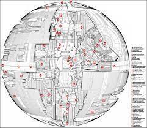
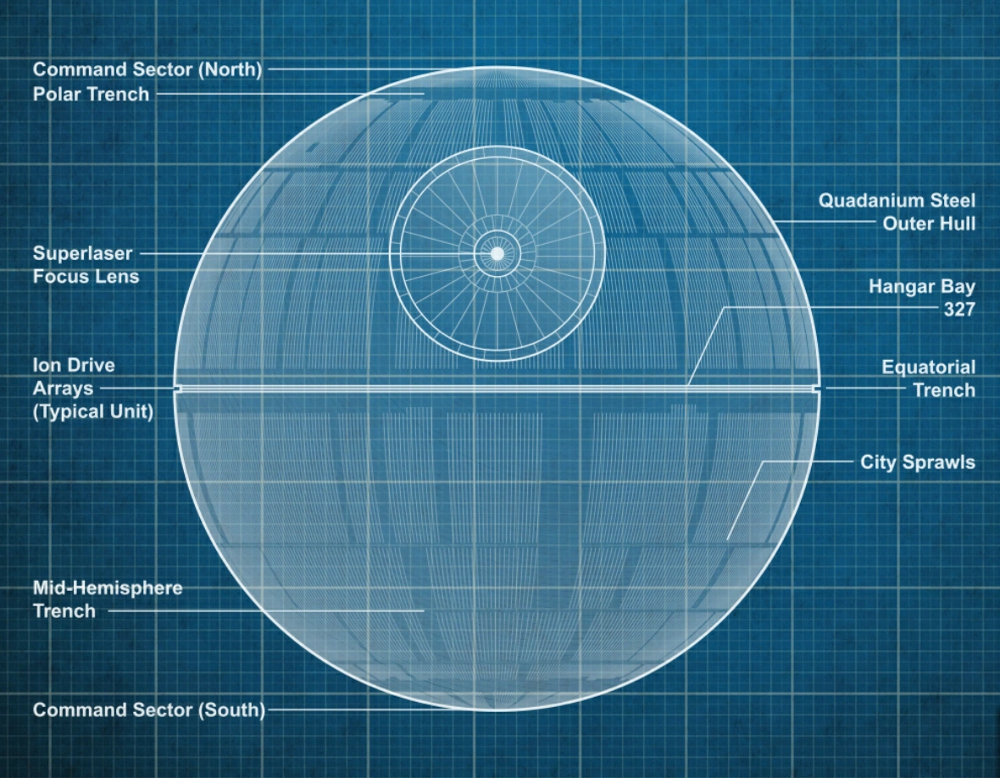

This site about Death Stars


DS-1 Orbital Battle Station was originally designed by the Geonosians before the
Galactic Republic and later the Galactic Empire took over the project. However, the plans for the
battle station were stolen by the Rebel Alliance from Scarif, leading to its destruction at the Battle of Yavin,
but not before it unleashed its planet-destroying cannon on Alderaan, Jedha City, and Scarif.
The DS-2 Death Star II Mobile Battle Station, codenamed Second Sun, also known as the Death Star MK. 2, the
Death Star Mark 2, or simply the second Death Star, was a partially completed moon-sized battle station
constructed by the Galactic Empire as the successor to the first Death Star. A larger and more powerful
Death Star, the second Death Star's long-term purpose was similar to the first: to terrorize planets and
star systems in league with the Rebel Alliance through the use of its planet-destroying superlaser